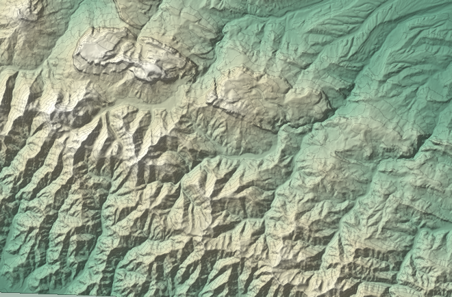

Personal engineering project · Azerbaijan
Azerbaijan Rural Telecommunication Coverage Optimizer
A study of how mountain terrain affects wireless links around Xınalıq, and how many tower sites a proposed network would need.
The problem
Two places can be close on a map and still be hard to connect by radio. Around Xınalıq, a ridge can cross the direct path between a proposed mast and a settlement. A signal-strength estimate based on distance alone can miss that obstruction.
The goal
Estimate which settlements have a usable link from at least one candidate site. Then find the fewest towers that can serve those reachable settlements, assuming all sites have the same cost.
What we did
- Prepared the study area
- We used OpenStreetMap to identify 14 settlements within 17.5 km of Xınalıq. We used a 90 m elevation surface and screened a grid of hypothetical mast locations for factors like steep slopes and water.
- Modeled the links
- We represented each settlement with one outdoor receiver point. We first estimated usable signal strength over distance, then checked whether the direct path cleared the terrain.
- Compared site-selection methods
- The greedy method chooses the site that serves the most settlements still waiting for a link. The exact solver finds the minimum number of sites. Both methods use the same set of modeled links.
What we found
In the baseline setup, all 14 settlements had a passing signal-strength link. With terrain included, only five had a passing link. The denser candidate grid added three reachable settlements at either height, and taller masts added one at either spacing.
| Mast | Grid spacing | Candidate sites | Reachable | Minimum towers |
|---|---|---|---|---|
| 20 m | 6 km | 19 | 5 of 14 | 2 |
| 40 m | 6 km | 19 | 6 of 14 | 3 |
| 20 m | 3 km | 84 | 8 of 14 | 5 |
| 40 m | 3 km | 84 | 9 of 14 | 5 |
Five towers reached nine settlements in the 40 m, 3 km scenario. Greedy matched the exact minimum in all four scenarios. In that strongest scenario, the two methods shared three sites and chose different locations for the other two.
Explore the study area
Change the mast or grid settings, then select a settlement. The map shows one passing link when the displayed sites can reach it.

NXınalıq
How this could help
A planning team could use this workflow to compare layouts, shortlist locations for a site visit, and identify settlements that may need a different approach. In this study, having more locations to choose from made a bigger difference to reachability than doubling mast height.
Limits of the study
The pilot uses hypothetical equipment, one receiver point per settlement, and a 90 m elevation grid that can miss narrow features. It focuses on direct line of sight and assumes each site has power and an upstream connection. Field measurements and checks for access, permits, and construction costs would be needed before making deployment decisions. Five settlements still had no passing link in any of the tested scenarios.